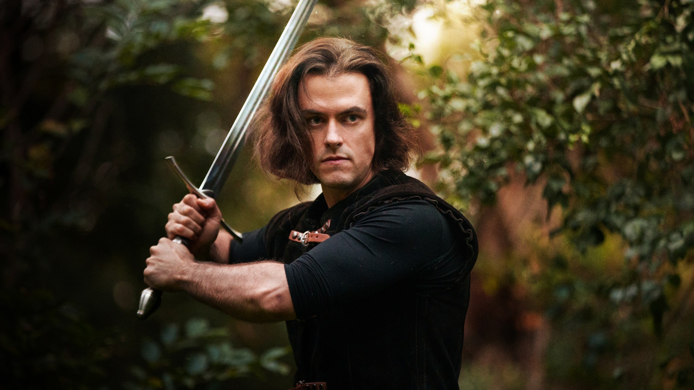
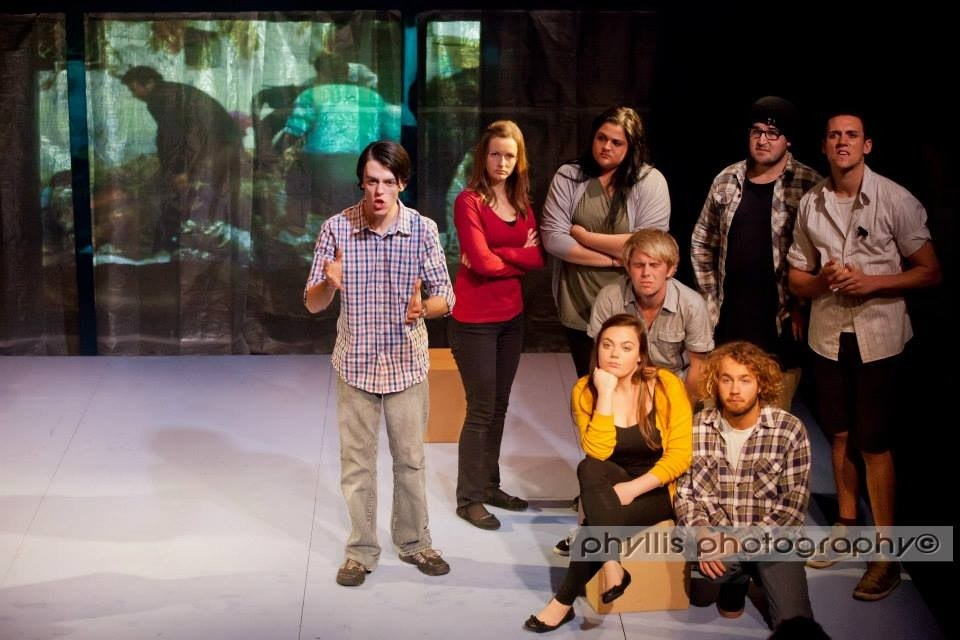

Selected work
Characters with polish, pressure and a fracture line.
A curated selection across feature film, television, international vertical drama and theatre. The full record remains available in the downloadable CV.
Screen
Film and television.
Lead, supporting and series work across features, shorts and television.
Algorithm
A narcissistic social-media star whose kidnapping becomes a global livestream, stripping away the persona he has spent his life selling.
IMDb profile ↗Glass Cannon
A lead performance in a tightly contained dramatic short from Wilkins Ho Productions.
IMDb profile ↗Shippers
Series-regular ensemble work across an original comedy-drama format.
IMDb profile ↗Nameless: Blood and Chains
Long-form series work in a heightened dramatic world.
View on IMDb ↗Deadly Women
Guest performance for Beyond Productions.
IMDb profile ↗Abrupt Chaos
Supporting work in a dramatic short from Wilkins Ho Productions.
View on IMDb ↗Additional feature, short-form and television credits, including lead roles, remain listed on IMDb and in the full CV without being individually highlighted here.



Vertical drama
International short-form drama.
Sustained character work across romance, villains, supernatural stories and high-volume international production.
Vampire’s Forbidden Kiss
A charismatic vampire supremacist whose courtly charm conceals a vision of humanity living beneath his kind.
View on IMDb ↗Cinderella’s Royal Secret
A socially fluent playboy caught in a love triangle, whose reputation keeps both the heroine and the audience guessing whether he is an ally or a danger. He understands the social game perfectly and quietly resents the performance it requires.
View on IMDb ↗Return of the Racing King
A volatile rival in a fifty-two episode vertical drama.
View on IMDb ↗Alpha King, Your Pregnant Luna Escaped
Supporting work in an Australian-produced fantasy romance.
View on IMDb ↗
Theatre
Stage foundations.
Classical, modern and heightened roles developed through conservatory training and sustained production work.
Training and skills
Conservatory craft with physical range.
ACTT graduate. Physical skills include fencing, boxing, Brazilian jiu-jitsu, calisthenics, horse riding and archery, supported by extensive accent work.